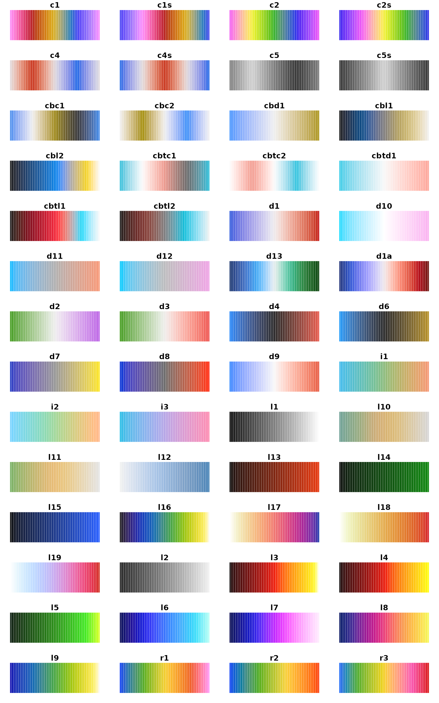

CET Perceptually Uniform Colour Maps
James Balamuta with material heavily taken from Peter Kovesi
2023-11-14
Source:vignettes/cet_color_schemes.Rmd
cet_color_schemes.RmdThe cetcolor
package is designed to bring to R the colour maps created by Peter Kovesi in
Kovesi (2015). These colour maps avoid
points of locally high colour contrast leading to the perception of
false anomalies in your data when there are none. The colour maps have
been designed to avoid this phenomenon by having uniform perceptual
contrast over their whole range.
This vignette attempts to summarize information presented at http://peterkovesi.com/projects/colourmaps/.
Supported Colour Maps
There are 56 supported colour maps organised according to the attributes:
- Linear
- Diverging
- Rainbow
- Cyclic
- Isoluminant
- Colourblind
Organisation of Colour Maps
The colour maps have a short name and a long name. The shortname is meant to use while graphing and the long name is meant to understand how the color map was generated.
The shortnames are created by having at the start one or two characters to indicate whether the map is: linear (l), diverging (d), rainbow (r), cyclic(c), isoluminant (i) or colour blind (cb). From there, a number is appended to the end. For example, the linear greyscale is ‘l1’, the heat colour map is ‘l3’, and the blue-white-red diverging map is ‘d1’ and so on. Below, you will see each of the sections of colourmaps in a visual catalog with their shortnames.
Each colour map is also assigned a “long” named as follows:
linear_kryw_5-100_c67_n256
/ / | \ \
Colour map attribute(s) / | \ Number of colour map entries
/ | \
String indicating nominal | Mean chroma of colour map
hue sequence. |
Range of lightness valuesMoreover, the colour map name may contain cyclic shift information as well as indicating whether it has been reversed by a flag.
cyclic_wrwbw_90-40_c42_n256_s25_r
/ \
/ Indicates that the map is reversed.
/
Percentage of colour map length
that the map has been rotated by.Colour Maps
Please note, some colormaps have been “deprecated” from the initial release. As a result, these colormaps do not have a shortname and, thus, their long-name are displayed. In a future release, we will likely remove these color schemes.
Overall
